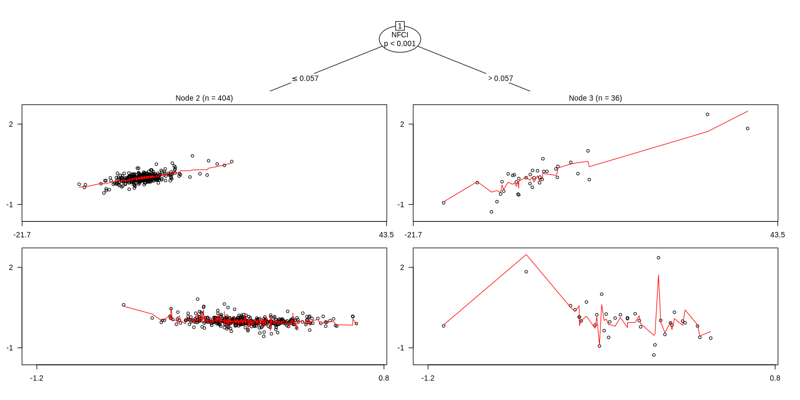

When financial conditions tighten, credit spreads react twice as hard to VIX
A model-based tree splits once, at NFCI 0.057, and beats a calendar break. The catch: shifted state variables split 53% of the time too.
methods/partykit/APPROVAL.md (workflow, Stage 4b). Until then the skill it feeds is a DRAFT.The short version
- A model-based tree on the monthly change in the GZ spread, regressed on ΔVIX and Δ10y, splits once at NFCI 0.057. When conditions are tight, the VIX slope doubles (0.029 → 0.059) and the 10y slope more than triples (−0.125 → −0.444).
- Financial conditions beat calendar time as the split variable (NFCI p < 1e-5; time p = 0.83). BIC is −513.6 against −350.5 pooled. Reproduced exactly.
- The catch: shifting the state variables, which keeps them persistent, still produced a split 53% of the time. Part of the finding is volatility clustering that any persistent state variable can flag.
Question
Does the sensitivity of credit spreads to equity-vol and rate shocks depend on the state of financial conditions, or did it just change at some date?
Data used
The same monthly Drive panel as application 1 (manifest.json). ΔGZ, ΔVIX and Δ10y, with 10y–2y, NFCI, 2y and a time index as partitioning variables. n = 440 months.
What we ran
lmtree(dGZ ~ dVIX + dDGS10 | T10Y2Y + NFCI + DGS2 + time, minsize = 36, alpha = 0.01, bonferroni = TRUE), plus pooled OLS, OLS with the tree's split as an interaction, OLS with a 2008 break, pre- and post-2008 windows, a fit that leaves out the crises, and 100 circular shifts of the state variables.
Figures and tables

| leaf | n | intercept | ΔVIX slope | Δ10y slope |
|---|---|---|---|---|
| NFCI ≤ 0.057 | 404 | −0.0028 | 0.0293 | −0.1252 |
| NFCI > 0.057 | 36 | −0.0384 | 0.0587 | −0.4444 |
| pooled OLS | 440 | −0.0014 | 0.0432 | −0.1576 |
Original vs reproduced
| number | original | reproduced |
|---|---|---|
| split | NFCI ≤ 0.057 | NFCI ≤ 0.057 |
| BIC pooled / MOB | −350.5 / −513.6 | −350.5 / −513.6 |
| root test p: 10y–2y / NFCI / 2y / time | 0.197 / <1e-5 / 0.024 / 0.829 | same |
Robustness
- Windows: before 2008 the root is 2y ≤ 3.87; after 2008 it is NFCI ≤ −0.18. Without 2008–09 and Mar–Jun 2020 it is still NFCI (≤ −0.16).
- Baselines: OLS with an NFCI > 0.057 interaction has BIC −418.5 and OLS with a 2008 break −347.8. MOB's extra gain over the dummy-interaction OLS comes partly from a separate error variance per leaf.
- Null: circularly shifted state variables split in 53% of 100 shifts. This fails.
Limitations
- Only 36 months sit in the tight-conditions leaf, and they are concentrated in crises.
- The instability test reacts to heteroskedasticity, so "the slope changes" and "the noise changes" are partly confounded.
Takeaway
"Spreads react harder to VIX when conditions are tight" is a reasonable description, and it survives windows and dropping the crises. But it doesn't pass a dependence-aware null, so the skill reports it as descriptive, together with its null split rate.
Back to the method
partykit trees: readable subgroups that pass on a cross-section and overfit time series
Conditional inference trees and model-based trees reproduced exactly. They clear every gate on 3,074 counties, but a circular-shift null breaks both time-series uses. Recommended (scoped), awaiting approval. A well-known package, so less of a scout find.